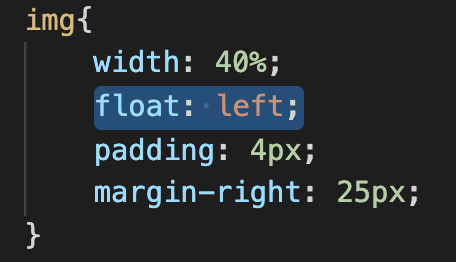

Определяет, по какой стороне будет выравниваться элемент, при этом остальные элементы будут обтекать его с других сторон. Когда значение свойства float равно none, элемент выводится на странице как обычно, при этом допускается, что одна строка обтекающего текста может быть на той же линии, что и сам элемент.